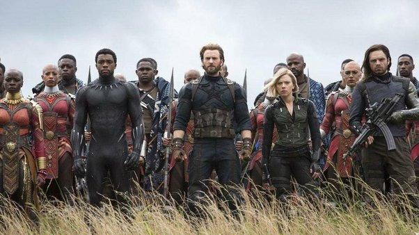

Le cinéma est un art du spectacle. En français, il est couramment désigné comme le «
septième art », d'après l'expression du critique Ricciotto Canudo dans les années 19201.
L’art cinématographique se caractérise par le spectacle proposé au public sous la forme
d’un film, c’est-à-dire d’un récit (fictionnel ou documentaire), véhiculé par un support
(pellicule souple, bande magnétique, contenant numérique) qui est enregistré puis lu par
un mécanisme continu ou intermittent qui crée l’illusion d’images en mouvement, ou par
un enregistrement et une lecture continus de données informatiques.
AVENGERS : INFINITY WAR
Alors que les Avengers et leurs alliés ont continué de protéger le monde face à des
menaces bien trop grandes pour être combattues par un héros seul, un nouveau danger
est venu de l'espace : Thanos. Despote craint dans tout l'univers, Thanos a pour objectif
de recueillir les six Pierres d'Infinité, des artefacts parmi les plus puissants de l'univers,
et de les utiliser afin d'imposer sa volonté sur toute la réalité. Tous les combats que les
Avengers ont menés culminent dans cette bataille.

Première sortie 23 avril 2018 (los Angeles)
Réalisateurs: Anthony Russo Joe Russo
A STAR IS BORN
Star de country un peu oubliée, Jackson Maine découvre Ally, une jeune chanteuse très
prometteuse. Tandis qu'ils tombent follement amoureux l'un de l'autre, Jack propulse
Ally sur le devant de la scène et fait d'elle une artiste adulée par le public. Bientôt
éclipsé par le succès de la jeune femme, il vit de plus en plus de mal son propre déclin…